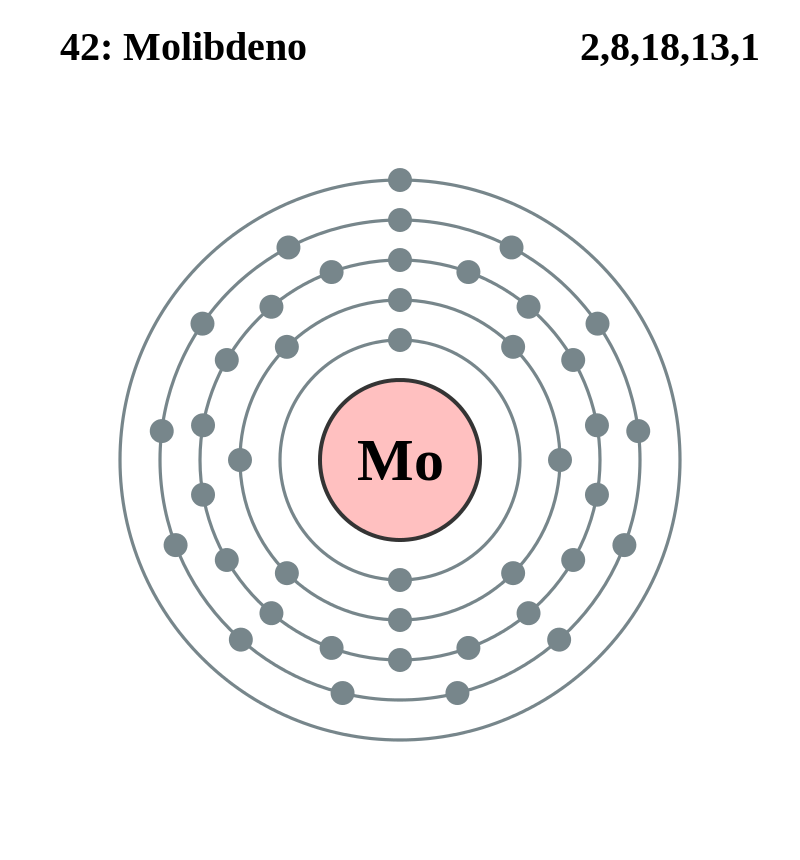

|
|
||
|
Molibdeno Este metal es blanco plateado y es muy duro, aunque es más blando y más dúctil que el tungsteno. Se usa como un agente de aleación y hace que los aceros enfriados y templados sean más duros y fuertes, y mejora su resistencia a altas temperaturas. El molibdeno se oxida a temperaturas elevadas. Se utiliza en aleaciones con base de níquel que son resistentes al calor y a la corrosión. Este metal se ha utilizado en hornos para trabajar vidrio que se calientan eléctricamente y electrodos de antecrisoles, en aplicaciones de energía nuclear y en piezas de aeronaves y misiles. El molibdeno es un elemento traza esencial para la fijación del nitrógeno y otros procesos metabólicos. |
 |
DATOS Número Atómico: 42 Peso Atómico: 95.95 Electronegatividad: 2,16 Configuración Electrónica: 4d5 5s1 Estados de Oxidación: +6,3,5 No. de Electrones de Valencia: 6 |